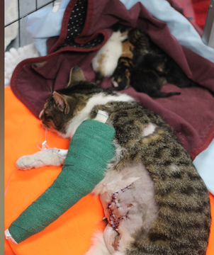

Misty – The Abandoned Kitten
Rescued from a storm drain during heavy rain, shivering and malnourished. After weeks of daily care and nutritious food, she regained her strength and found her forever home.
Every life we rescue becomes a story of courage, care, and love. These are the animals who fought to survive — and the people who chose to care.
"Each of these animals survived something terrible. And each of them — every single one — still chose to wag their tail when kindness arrived."
🐱Found bleeding and trembling near a busy highway in Wardha, Bruno was too weak to lift his head. Our team rushed to him at midnight. He had deep wounds, severe malnutrition, and no one who cared.
For six weeks, our volunteers fed him by hand, sat beside him through his pain, and watched him slowly choose life again. The day he stood up and wagged his tail was the day Forever Home was truly born.
Behind every animal is a world of pain that turned into love. Here are the ones whose stories you need to hear.
Rescued from a storm drain during heavy rain, shivering and malnourished. After weeks of daily care and nutritious food, she regained her strength and found her forever home.
Abandoned without food and suffering from painful skin infections. With proper treatment, daily shelter, and the warmth of our volunteers, Rocky reclaimed his joy and found a loving family.

💚 HealingFound injured and exhausted with her newborn kittens depending on her. We provided emergency care, nutrition, and safety. Luna healed, and so did her entire little family.
Found severely dehydrated and barely breathing. Max required emergency IV treatment and round-the-clock monitoring. With medicines, food, and love — he became healthy, playful, and full of life.
 🏠 Adopted
🏠 Adopted
Malnourished and too scared to make a sound, Bella flinched at every touch. Through patient medical care, daily feeding, and gentle love — she healed emotionally and physically, blossoming into a joyful companion.
Hit by a vehicle and left on the road, Oreo survived against all odds. After months of surgery recovery, physiotherapy, and around-the-clock care — he walked again. Today he's someone's most cherished companion.
Pets Rescued
Adoptions
Treatments
Volunteers
From the first emergency call to the forever home — here's how every rescue story is written.
We respond quickly and safely rescue animals from streets, danger zones, and impossible situations.
Immediate vet care, vaccinations, wound treatment, surgery if needed, and daily recovery monitoring.
Daily nutritious meals, safe housing, and a warm environment filled with patience and unconditional love.
"The day we adopted Rocky, our home changed forever. He filled every corner with joy we didn't know we were missing. Forever Home's team made every step feel warm and personal."
"Misty came to us broken and scared. Two years later she's the heart of our household. We didn't save her — she saved us. Adopting was the best decision of our lives."
Every story here was made possible by someone who chose to care. That someone could be you. Adopt, donate, or support — and write the next chapter.